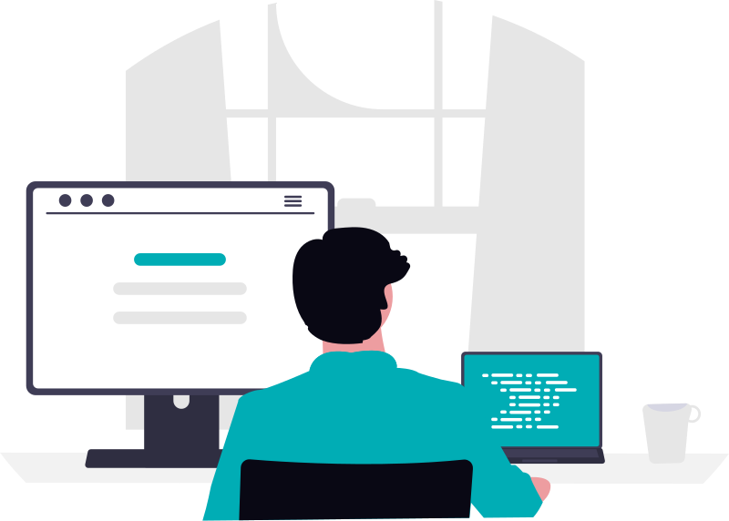
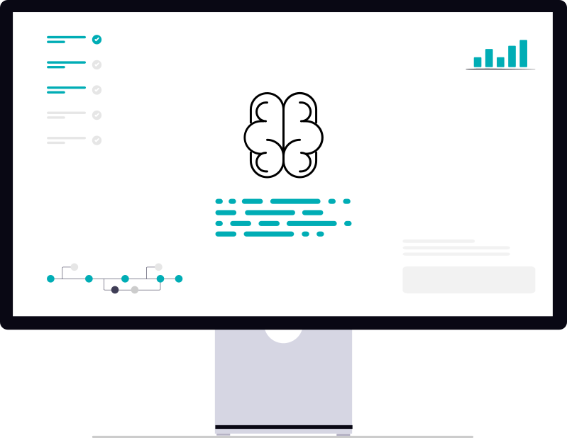
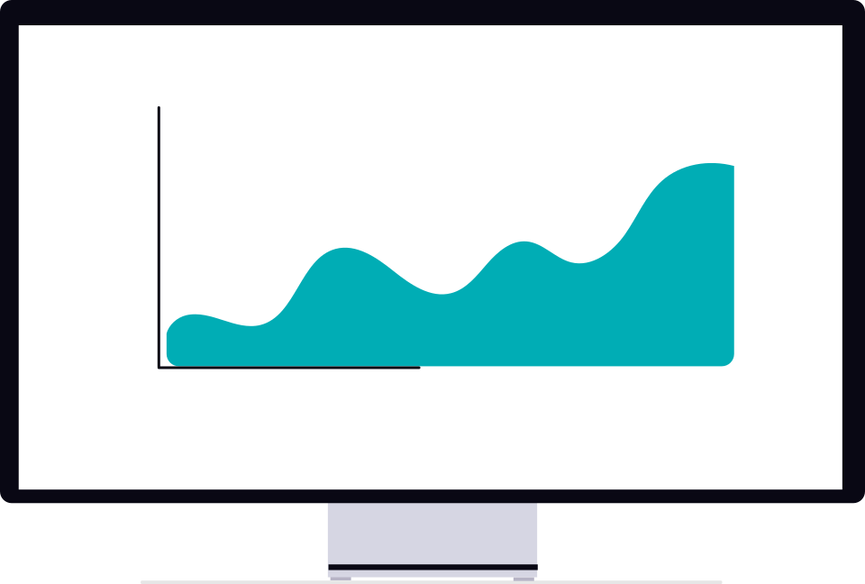

About Me

I'm a Computer Science & Engineering student who enjoys building software, exploring new technologies, and continuously improving my technical skills.

My current interests include Artificial Intelligence, Machine Learning, Data Science, Linux, and Web Development. I enjoy creating practical projects that help me learn by doing.

I'm currently focused on strengthening my programming fundamentals while gradually moving toward AI/ML and Data Science.
Skills
Programming Languages
- Python
- C
- C++
Web Development
- HTML
- CSS
- Bootstrap
Tools & Technologies
- Git
- GitHub
- Linux
- LaTeX
- VS Code
- Notion
- Obsidian
Currently Learning
- JavaScript
- Tailwind CSS
- AI/ML Fundamentals
Projects
Flooder Game
A terminal-based puzzle game inspired by the classic Flood-It concept. Players strategically flood adjacent tiles to transform the entire board into a single color within a limited number of moves.
Key Features
- Multiple difficulty levels
- Interactive command-line gameplay
- Modular and maintainable code structure
- Win/loss detection system
Powerball Simulator
A lottery simulation program that recreates Powerball-style draws using randomly generated numbers. Users can test their chosen numbers and compare them against simulated results.
Key Features
- Randomized draw generation
- User-selected number combinations
- Match-checking and result evaluation
- Demonstrates probability-based simulation concepts
Personal Website
A professional personal website developed to showcase projects, skills, and ongoing learning in software development and technology.
Key Features
- Fully responsive design
- Clean and modern user interface
- Built with accessibility and usability in mind
- Designed for continuous expansion and improvement